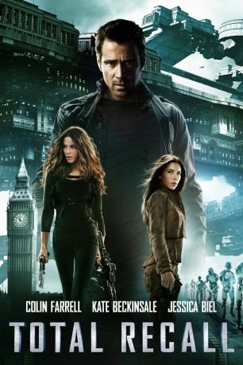
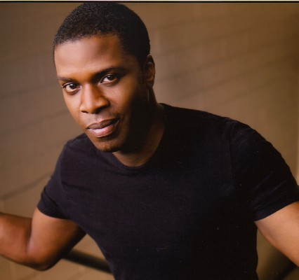
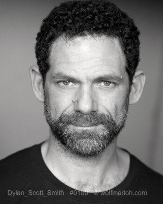
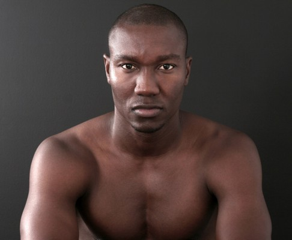
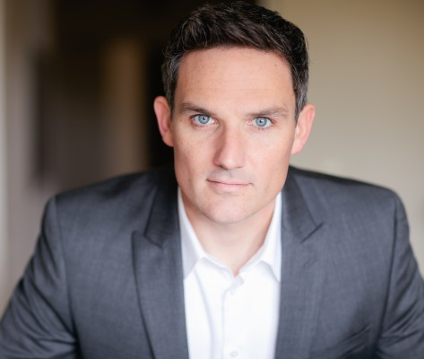

#7777 Total Recall
 
 IMDB-Wertung: 6.3 / 10
IMDB-Wertung: 6.3 / 10  Tomatometer: 31
Tomatometer: 31  Metascore: 0
Metascore: 0 
Herzlich Willkommen bei Rekall, der Firma, die ihre Träume dank ihres Total Recall Verfahrens in reale Erinnerungen verwandeln kann. Für den Fabrikarbeiter Douglas Quaid klingt der Urlaub, den man nur in seiner Phantasie macht, nach der perfekten Lösung, seinem frustrierenden Leben zu entgehen. Obwohl er eine wundervolle Frau hat, die er liebt, könnten die Erinnerungen an ein Leben als Super-Agent genau das sein, was Douglas gerade braucht. Bei der Gedankenbefüllung geht jedoch etwas schief und Quaid wird plötzlich zu einem gejagten Mann. Auf der Flucht vor der Polizei verbündet sich Quaid mit einer Rebellenkämpferin. Zusammen wollen sie den Anführer jener Untergrundorganisation finden und Cohaagen aufhalten. Die Linie zwischen Fantasie und Realität beginnt zu verschwimmen und das Schicksal seiner Welt hängt am seidenen Faden, als Quaid herausfindet, was seine wahre Identität, seine wahre Liebe und sein wahres Schicksal ist.
Jahr: 2012
Dauer: 118 Minuten
FSK: 12
Land: USA Studio: Columbia PicturesTonspuren: DTS - ,
Untertitel: Deutsch, Englisch,
Auflösung: 1080p (1920x800) Größe: 8366 MB
Genre: Action, Thriller, Sci-Fi, Abenteuer, Mystery
Regisseur:  Len Wiseman
Len Wiseman
Drehbuch: Kurt Wimmer
Soundtrack: Harry Gregson-Williams
Darsteller:
 Colin Farrell als Douglas Quaid / Hauser
Colin Farrell als Douglas Quaid / Hauser- Kate Beckinsale als Lori Quaid
 Jessica Biel als Melina
Jessica Biel als Melina Bryan Cranston als Cohaagen
Bryan Cranston als Cohaagen Bokeem Woodbine als Harry
Bokeem Woodbine als Harry Bill Nighy als Matthias
Bill Nighy als Matthias John Cho als McClane
John Cho als McClane Will Yun Lee als Marek
Will Yun Lee als Marek-  Milton Barnes als Resistance Fighter
- James McGowan als Military Adjutant
- Natalie Lisinska als Bohemian Nurse
 Michael Therriault als Bank Clerk
Michael Therriault als Bank Clerk- Mishael Morgan als Rekall Receptionist
-  Dylan Smith als Hammond
 Andrew Moodie als Factory Foreman
Andrew Moodie als Factory Foreman- Kaitlyn Leeb als Three-Breasted Woman
- Nykeem Provo als Hauser Cover Identities
 Steve Byers als Hauser Cover Identities
Steve Byers als Hauser Cover Identities- Geoffrey Pounsett als Sentry Lieutentant
- Jesse Bond als Lead Sentry
-  Warren Belle als Security Sentry
- Vincent Rother als Sentry
- Matthew Nette als Sentry
- Brooks Darnell als Sentry
- Brett Donahue als Sentry Trooper
- James Downing als Synth Captain
- Simon Sinn als Murray
- Lisa Chandler als Prostitute
- Philip Moran als Immigration Officer
- Clive Ashborn als Newscaster
- Emily Chang als Newscaster
- Brian Rodriguez als Newscaster
-  Brian T. Delaney als ATC Dispatcher
 Cam Clarke als Terminal Announcer
Cam Clarke als Terminal Announcer Bridget Hoffman als Chopper
Bridget Hoffman als Chopper Jozef Aoki als New Asia Commuter (uncredited)
Jozef Aoki als New Asia Commuter (uncredited)- Sean Baek als Bank Security Guard (uncredited)
- Craig Braginsky als Police Officer (uncredited)
- Billy Choi als Street peddler (uncredited)
- Daniel Cristofori als Resistance Soldier #10 (uncredited)
- Stephon Fuller als Paramedic #3 (uncredited)
- Currie Graham als Bergen (uncredited)
 Ethan Hawke als Carl Hauser (in director's cut) (uncredited)
Ethan Hawke als Carl Hauser (in director's cut) (uncredited)- Phi Huynh als Street Vendor / Passerby (uncredited)
- Adrian Jaworski als Street Vendor (uncredited)
- Tony Kelly als Businessman (uncredited)
- Kane Mahon als UFB #1 (uncredited)
- Shane Pollard als Resistance Fighter (uncredited)
 Stephen Stanton als Additional Voices (uncredited)
Stephen Stanton als Additional Voices (uncredited)- Denise Vasquez als Immigration Officer (uncredited)
Datei: X:\2012(N-Z)\Total Recall (2012, FSK12, 1920x800).mkv seit 15.12.2017
Festplatte: HD 2012(N-Z)-2013(A-H)
 Es gibt insgesamt 138 Filme in der Gruppe '2012(N-Z)'
Es gibt insgesamt 138 Filme in der Gruppe '2012(N-Z)'